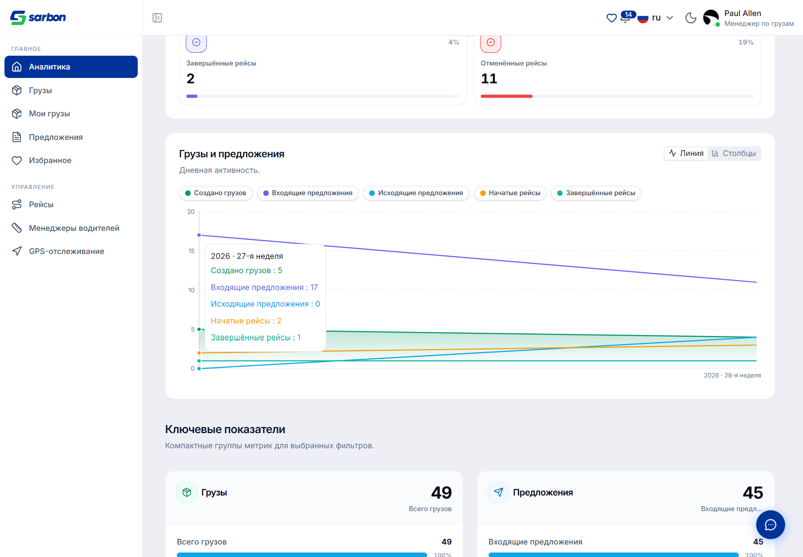
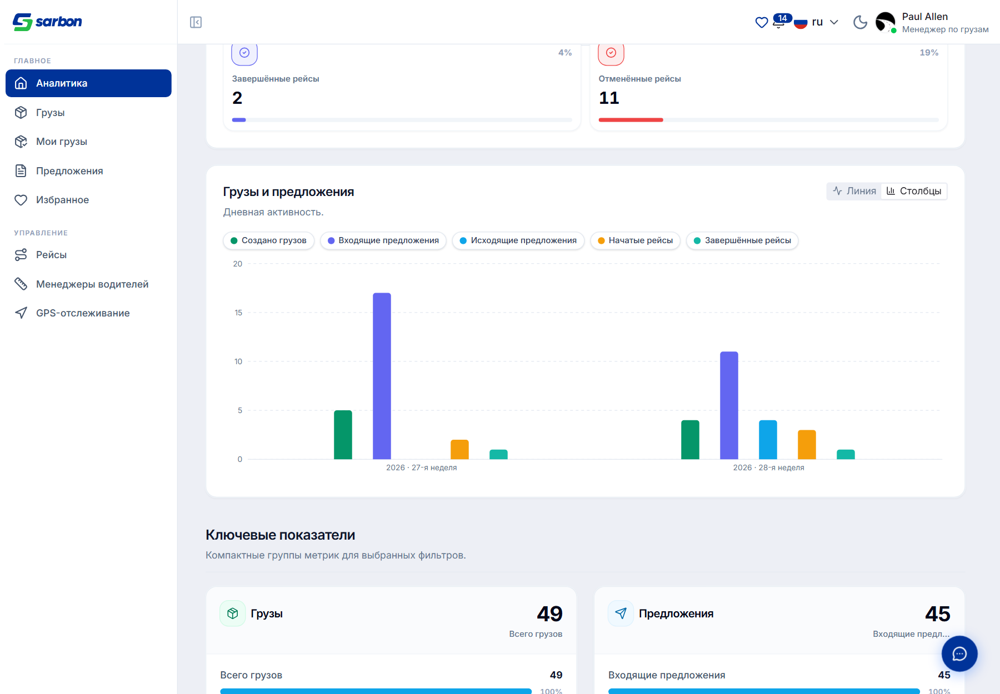
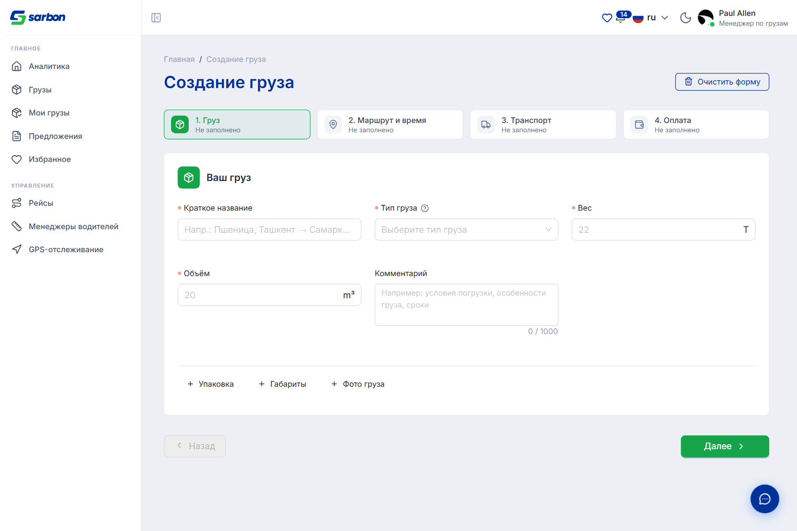
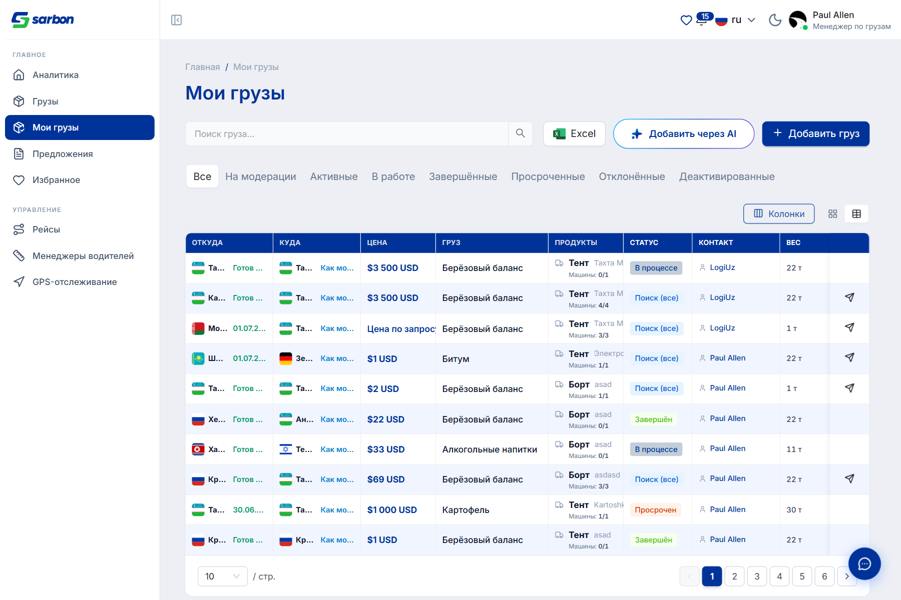
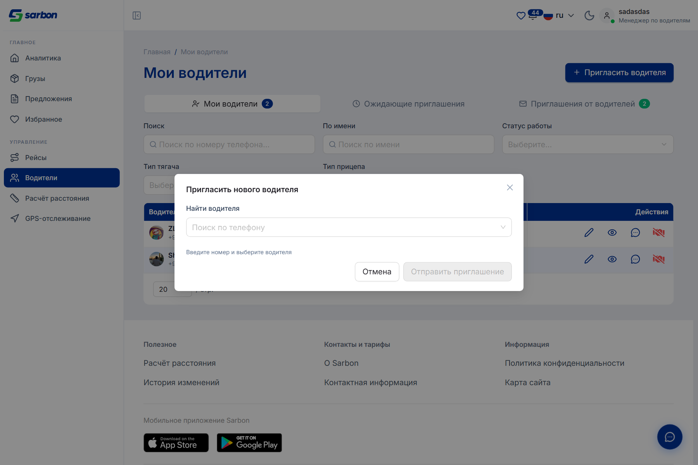
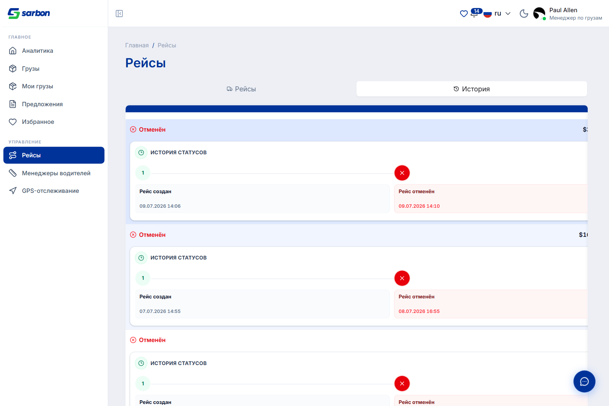
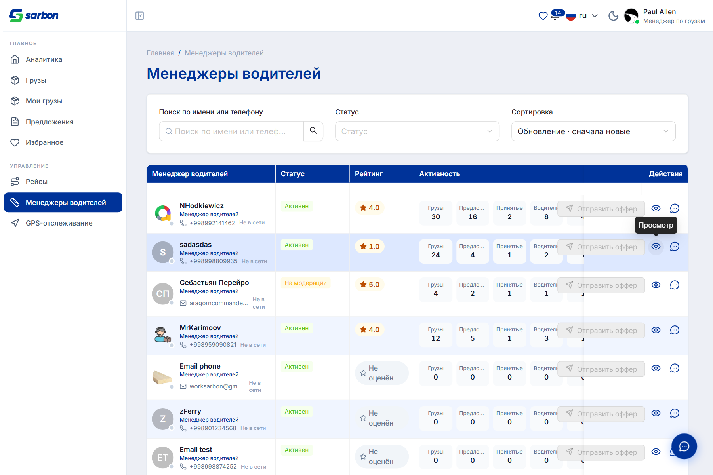

11.07.2026 — насыщенный день по веб-разделам менеджера грузов и менеджера водителей. Реализованы 8 фронтенд-доработок по ревью бизнес-аналитика (автоперенос способа оплаты, объём с учётом кол-ва мест, причина отклонения + переотправка, подсказки по точкам маршрута, экран «аккаунт на проверке», липкий верхний скроллбар таблицы, отправка оффера из строки и нескольким водителям). На дашборде аналитики график активности получил переключатель Линия ↔ Столбцы и 5 серий-чипов (добавляемых/убираемых), а также ранее не показывавшиеся денежные метрики (выручка/стоимость завершённых, цена маршрута, средняя цена водителя). Трекер истории рейсов закрыл 6 пробелов (тултипы бейджей, рейтинги диспетчер/водитель, ФИО в шагах, цена в шаге, счётчик шагов, вид отменённых) и лишился горизонтального скролла. Форма создания груза очищена от нереализованной кнопки «Заполнить из шаблона», а модалка приглашения водителя — от ошибочного блока «Ожидающие приглашения» (теперь только поиск по телефону). Отдельный блок — звонки в чате: видеозвонок теперь показывает иконку камеры и текст «Видеозвонок» (раньше — телефон и «Голосовой»), устранено дублирование времени в пузырьке звонка, а подпись кнопки камеры стала действием («Включить/Выключить камеру») в 15 локалях. Таблица менеджеров водителей получила изменяемую ширину колонок и аккуратную кнопку «Отправить оффер». Флаги email-входа и AI-создания груза снова включены для тестирования.
| Область | Что было / причина | Что сделано | Файлы |
|---|---|---|---|
| Бизнес-аналитик — 8 доработок (Sarbon_v2) feature закоммичено |
По ревью бизнес-аналитика — набор точечных улучшений для веб-разделов менеджера грузов и водителей (проверено, что каждый пункт реализуем на фронтенде, без новых полей/эндпоинтов бэкенда). | Автоперенос способа оплаты в строки предоплаты/остатка; объём = Д×Ш×В × кол-во мест; причина отклонения + «изменить и переотправить»; подсказки по точкам маршрута; экран «аккаунт на проверке» с контактом поддержки; липкий верхний скроллбар таблицы; отправка оффера из строки + нескольким водителям. | Step4Payment · Step1CargoInfo · MyCargoDetailPage · Step2Route · AccountUnderReviewScreen · Table · CargoDriverOfferPanel + утилиты и тесты |
| Дашборд — график Линия/Столбцы + серии feature закоммичено |
График активности был только линией/областью; 5 серий нельзя было скрыть; аналитика возвращала неиспользуемые денежные поля. | Переключатель Линия ↔ Столбцы (гистограмма); 5 серий-чипов добавляемых/убираемых (нельзя скрыть последнюю видимую); выведены выручка/стоимость завершённых, цена маршрута, средняя цена водителя как KPI/строки. | ActivityChartBlock · ActivityChartCard(new) · RankedRows · activityChartControls(new) · useDashboardViewData · DashboardPage, локали ×15, тест |
| История рейсов — трекер статусов (6 фиксов) feature bug закоммичено |
Трекер истории рейса имел 6 пробелов: два неясных бейджа, не показаны рейтинги, нет ФИО в шагах, цена только в шапке, необъяснённый счётчик «7», неясный вид отменённого. Плюс горизонтальный скролл. | Тултипы на бейджи событие/статус; рейтинги диспетчер/водитель (read-only звёзды); ФИО водителя в шагах (резолв по /drivers/:id); цена на завершающем шаге; тултип на счётчик шагов; подтверждён вид отменённых. Убран горизонтальный скролл. | cargoTypes · tripStatusTimeline · tripRatingsDisplay(new) · TripHistoryTimeline · TripHistoryRatings(new) · TripsHistoryCardsList · useTripsPresentation · useTripHistoryDriverNames(new), локали ×15, 3 теста |
| Отправка оффера из строки + несколько водителей feature закоммичено |
Оффер отправлялся только из детальной панели и только одному водителю. | Компактная кнопка «отправить оффер» в колонке действий (all-cargos + my-cargos), доступна по статусу груза; выбор нескольких водителей за раз (по одному вызову на получателя, агрегированный итог). | CargoDriverOfferPanel · allCargosTableColumns · myCargosTableColumns · offerSendSummary(new) + тест |
| Создание груза — убрана «Заполнить из шаблона» cleanup закоммичено |
На странице «Создание груза» была кнопка + модалка «Заполнить из шаблона»; пикер шаблонов так и не был реализован, фича больше не нужна. | Удалено на всю глубину: кнопка, состояние, пропсы, тип и 4 осиротевших ключа локали ×15. Все 4 шага мастера и валидация не тронуты, ручной ввод работает. | CargoCreatePage · CargoForm · types.ts, локали ×15 (−4 ключа) |
| Приглашение водителя — убран блок «Ожидающие приглашения» cleanup закоммичено |
Модалка «Пригласить нового водителя» ошибочно рендерила блок «Ожидающие приглашения (N)» — он относится к отдельной вкладке, а не к поиску. | Удалён блок + его пропсы/тип/источник данных. Модалка теперь только поиск водителя по телефону + отправка приглашения. | InviteDriverModal (−48) · DriversPage (−3) · useDriversPresentationData (−27) |
| Звонки в чате — иконка/текст видеозвонка bug рабочее дерево |
Видеозвонок (call_type: video) показывался в чате иконкой телефона и текстом «Голосовой звонок». | Медиа-тип звонка приходит в payload.type («video»), а код читал только payload.call_type. Теперь читаем оба → иконка камеры + «Видеозвонок» и в пузырьке, и в превью списка бесед. | chatCallEvents.ts · chatTypes.ts · ConversationItem.tsx + тест (+2) |
| Звонки в чате — время в пузырьке + кнопка камеры bug закоммичено |
В пузырьке звонка время показывалось дважды, длительность налезала на отметку доставки; кнопка камеры показывала статус, а не действие. | Убрано дублирующее inline-время, строка статуса переносится; подпись кнопки камеры — действие («Включить/Выключить камеру») в 15 локалях. | MessageBubble.tsx · GlobalAudioCallModal.tsx, локали ×15 |
| Менеджеры водителей — таблица + кнопка bug ui закоммичено |
Таблица «Менеджеры водителей» выглядела сломанной; колонки без изменения ширины; кнопка «отправить оффер» смотрелась чужеродно рядом с иконками. | Включена изменяемая ширина колонок + сохранение ширины (resizeStorageKey), аккуратная кнопка «Отправить оффер» (primary ghost), выровнены действия строки. | DriverManagersPage · useDriverManagerColumns |
| Флаги — email-вход и AI-создание (для тестирования) flag закоммичено |
После релиза оба флага остались выключены; нужно вернуть для тестирования. | EMAIL_AUTH_ENABLED и AI_CARGO_CREATE_ENABLED = true (только UI-гейтинг). Проверено на staging: страница AI-создания и Email-вход снова доступны. | constants/featureFlags.ts |
Технические записи — в bug.md (записи 2026-07-11 с 11:56 до 17:13).
Все скриншоты — реальные, сняты Playwright/Chromium против живого staging-бэкенда с авторизацией по паролю. Роли: Менеджер грузов +998994878460, Менеджер водителей +998998809935. Скрипты — в папке отчёта (capture-11-*.cjs).







| Артефакт | Путь |
|---|---|
| Журнал работ дня (записи 11.07) | bug.md (2026-07-11 · 11:56 · 12:20 · 14:45 · 15:05 · 15:25 · 15:40 · 15:45 · 15:55 · 16:00 · 16:05 · 17:13) |
| Краткая сводка для PM (Excel) | daily-report/11.07.26/report-11.07.26.xlsx |
| Дашборд — график активности | src/pages/dashboard/components/{ActivityChartBlock,ActivityChartCard}.tsx · utils/activityChartControls.ts |
| История рейсов — трекер статусов | src/pages/trips/components/{TripHistoryTimeline,TripHistoryRatings}.tsx · hooks/useTripHistoryDriverNames.ts · utils/tripRatingsDisplay.ts |
| Звонки в чате (видео-иконка/текст) | src/pages/chat/utils/chatCallEvents.ts · types/chatTypes.ts · components/{MessageBubble,ConversationItem}.tsx |
| Отправка оффера из строки | src/pages/cargos/components/CargoDriverOfferPanel.tsx · utils/offerSendSummary.ts |
| Скриншоты (живые, авторизованные) + capture-скрипты | daily-report/11.07.26/img/ · capture-11-dashboard.cjs · capture-11-cargo-manager.cjs · capture-11-mycargos.cjs · capture-11-invite-modal.cjs |
| Отчёт предыдущего рабочего дня | daily-report/10.07.26/ |